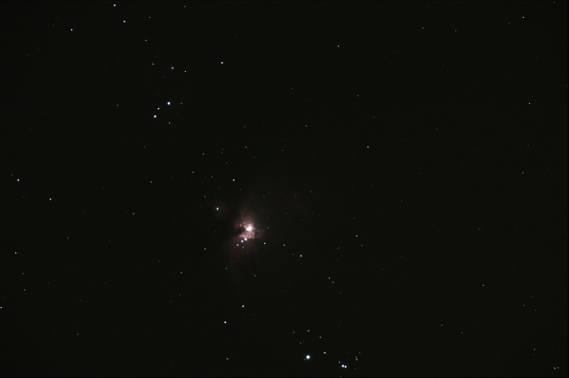
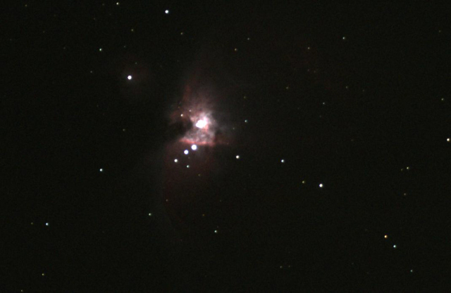

Orionnebel M42/M43
mit Canon EOS 300D (ohne IF-Sperrfilter), durch Vixen Refraktor auf
GPD-Montierung mit GoTo
aus Praunheim/Frankfurt vom 14.1.07, Aufnahme-Software "DSLR-Fokus",
Bearbeitung mit "iris".
Daten zum Orionnebel:
Entfernung - 1700 Lichtjahre
Helligkeit - 4.0 mag
Durchmesser - 25 Lj
Besonderheit - aktive Sternentstehungsregion

Die Aufnahme oben ist ein gemitteltes Bild aus 2 qualitativ schon hochwertigen Aufnahmen. Jeder Aufnahme wurde ein Dunkelbild abgezogen, die Bilder ausgerichtet und dann gemittelt. Es wurde nachträglich etwas aufgehellt, um die Randgebiete besser rauszubringen. Unten ein Ausschnitt des 6 Mega-Pixel Bildes.

Autor der Bilder: Klaus & Daniel Veltum
Das Copyright 2007 liegt bei der Astro-Ag der Liebigschule